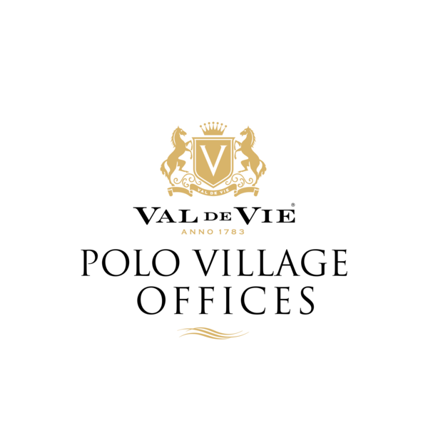

Welcome to a new way of doing business at the Polo Village Offices. The Polo Village Offices are designed by Boogertman & Partners and inspired by the Stefan Antoni designed Polo Village Apartments.
Surrounded by mountains with an indescribable sense of space, Val de Vie truly lives up to its name of the Valley of Life.